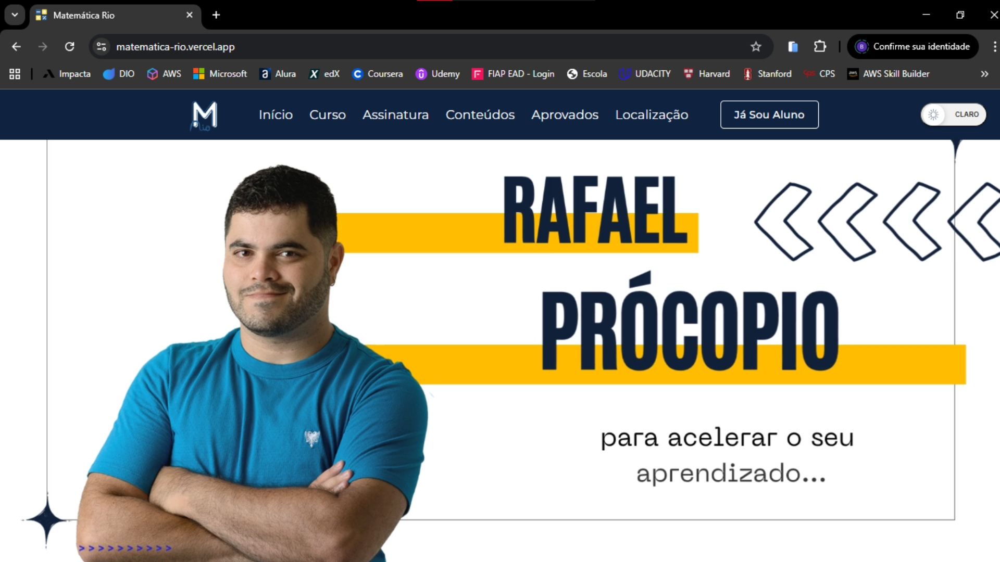
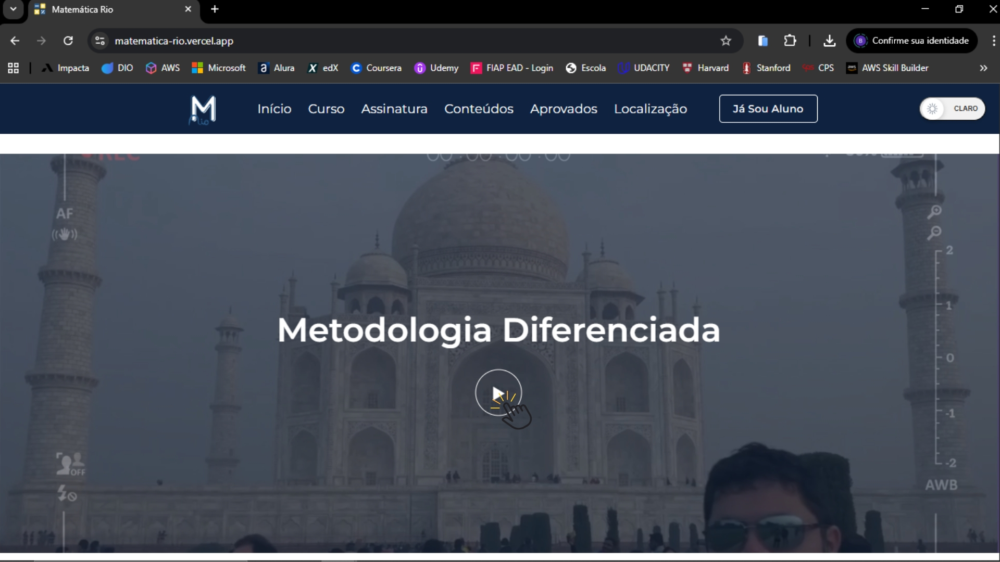
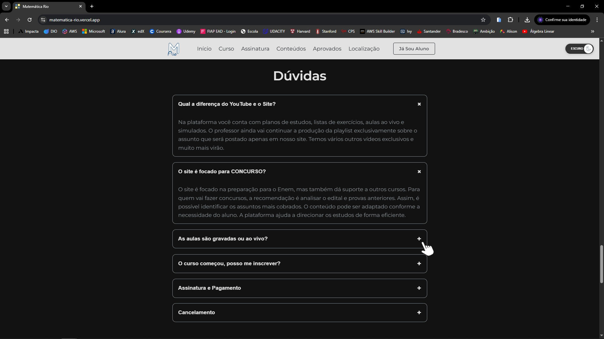

Matemática Rio
4º Semestre - Projeto Interdisciplinar
I. Descrição e Tecnologias
O projeto Matemática Rio consiste na reformulação completa do front-end da plataforma do Professor Rafael Procópio, o terceiro maior professor de Matemática do Brasil. O objetivo principal foi melhorar a experiência do usuário, otimizar a navegação e modernizar o design da plataforma, mantendo a funcionalidade e a praticidade do sistema original.
As principais tecnologias aplicadas foram:
- HTML5: Estruturação semântica da página.
- CSS3: Estilização moderna e responsiva.
- Ferramentas de UX/UI: Conceitos aplicados de experiência do usuário, usabilidade e design visual.
II. Minha Participação
Durante o desenvolvimento deste projeto, minha participação foi centralizada na elaboração da documentação técnica completa, onde realizei o mapeamento da infraestrutura e a padronização dos guias de tecnologia para garantir a clareza e o sucesso da entrega acadêmica.
III. Código-Fonte
O repositório completo com a documentação técnica e o código-fonte pode ser acessado abaixo:
Ver no GitHubIV. Screenshots


